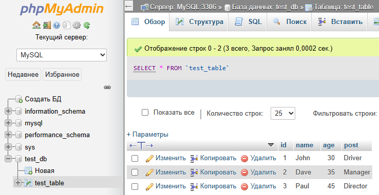

Пример автотеста
После того как плагин был установлен и подключен к проекту рассмотрим простой автотест.
У нас создана простая база данных в MySQL с именем test_db
В этой базе данных одна таблица test_table с полями: id, name, age, post

Теперь опишем простой автотест который будет добавлять, изменять и удалять данные в базе данных при этом проверяя корректность результатов.
|
Файл: ExampleTest3.cs
|
|
using System;
using System.Collections.Generic;
using System.ComponentModel;
using System.Windows.Forms;
using System.Threading;
using System.Threading.Tasks;
using System.IO;
using System.Data;
using System.Drawing;
using System.Linq;
using System.Text;
using System.Text.RegularExpressions;
using System.Net;
using System.Net.Http;
using System.Net.Http.Headers;
using System.Reflection;
using Newtonsoft.Json;
using HatFramework;
using HatPluginMySql;
namespace Hat
{
public class ExampleTest3
{
Tester tester;
public async void Main(Form browserWindow)
{
tester = new Tester(browserWindow);
await setUp();
await test();
await tearDown();
}
public async Task setUp()
{
tester.Description("Тест #3 проверка базы данных");
await tester.BrowserFullScreenAsync();
}
public async Task test()
{
DataTable dataTable = null;
List<List<string>> entries = new List<List<string>>();
TesterMySql testerMySql = new TesterMySql(tester);
await tester.TestBeginAsync();
await testerMySql.ConnectionOpenAsync("server=127.0.0.1;uid=root;pwd=;database=test_db");
int count = await testerMySql.GetCountEntriesAsync("SELECT * FROM test_table");
if (count > 0)
{
entries = await testerMySql.GetEntriesAsync("SELECT * FROM test_table");
dataTable = await testerMySql.GetDataTableAsync("SELECT * FROM test_table");
foreach (DataRow row in dataTable.Rows)
foreach (DataColumn col in dataTable.Columns)
tester.ConsoleMsg(row[col].ToString());
}
await testerMySql.SetEntryAsync("INSERT INTO test_table VALUES(NULL, 'I am Tester', 100, 'My post QA')");
bool result = await testerMySql.FindEntryAsync("test_table", "name", "'I am Tester'");
await testerMySql.AssertHaveInTableAsync("test_table", "name", "'I am Tester'");
entries = await testerMySql.GetEntriesFromTableAsync("test_table");
if (entries != null){
foreach(List<string> entry in entries)
foreach(string value in entry)
tester.ConsoleMsg(value);
}
await testerMySql.EditEntryAsync("UPDATE test_table SET age = 111 WHERE name = 'I am Tester'");
result = await testerMySql.FindEntryAsync("test_table", "age", "111");
await testerMySql.AssertHaveInTableAsync("test_table", "age", "111");
await testerMySql.RemoveEntryAsync("DELETE FROM test_table WHERE name = 'I am Tester'");
result = await testerMySql.FindEntryAsync("test_table", "name", "'I am Tester'");
await testerMySql.AssertDontHaveInTableAsync("test_table", "name", "'I am Tester'");
await testerMySql.ConnectionCloseAsync();
await tester.TestEndAsync();
}
public async Task tearDown()
{
// await tester.BrowserCloseAsync();
}
}
}
|
Обратите внимание что для корректной работы автотесты необходимо подключить библиотеку
using HatPluginMySql;
Вначале идет подключение к базе данных
TesterMySql testerMySql = new TesterMySql(tester);
await testerMySql.ConnectionOpenAsync("server=127.0.0.1;uid=root;pwd=;database=test_db");
Используя разные методы производятся манипуляции с данными
await testerMySql.GetCountEntriesAsync("SELECT * FROM test_table");
await testerMySql.GetEntriesAsync("SELECT * FROM test_table");
await testerMySql.GetEntriesFromTableAsync("test_table");
await testerMySql.GetDataTableAsync("SELECT * FROM test_table");
await testerMySql.SetEntryAsync("INSERT INTO test_table VALUES(NULL, 'I am Tester', 100, 'My post QA')");
await testerMySql.FindEntryAsync("test_table", "name", "'I am Tester'");
await testerMySql.EditEntryAsync("UPDATE test_table SET age = 111 WHERE name = 'I am Tester'");
await testerMySql.RemoveEntryAsync("DELETE FROM test_table WHERE name = 'I am Tester'");
Специальные методы для проверки присутствия или отсутствия данных в базе данных
await testerMySql.AssertHaveInTableAsync("test_table", "name", "'I am Tester'");
await testerMySql.AssertDontHaveInTableAsync("test_table", "name", "'I am Tester'")
В конце работа с базой данных завершается закрытием соединения с ней
await testerMySql.ConnectionCloseAsync();
Запустим автотест и посмотрим на ход проверки и результат

Все действия были выполнены, все проверки прошли успешно.
Тест завершился успешно.
Created with the Personal Edition of HelpNDoc: Create iPhone web-based documentation